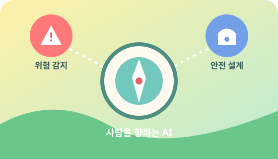

Non-Profit · AI · Society
AI 기반 사회와 디지털 인프라를
장기 시계에서 연구합니다.
AI Society Research Lab은 생성형 AI가 사회와 디지털 인프라에 미치는 영향을 분석하고, 공익 관점의 리포트와 워킹페이퍼를 발행하는 비영리 1인 연구소입니다.
최근 이슈 브리프 (샘플)
-
Issue Brief 2025-01
챗봇과 자살 유도 리스크: 서비스 설계 상의 안전 공백
-
Working Paper
AI 모델 규모·데이터 보존 정책이 인프라 수요에 미치는 영향
실제 리포트가 준비되면 제목과 내용을 교체하고
PDF 또는 GitHub 리포지토리 링크를 연결하세요.
연구소 한눈에 보기
AI Society Research Lab은 AI 기술이 만들어내는 사회적 영향과 디지털 인프라, 그리고 이를 지탱하는 디지털 인프라(NAND, HDD, GPU 등)를 한 프레임 안에서 바라보는 비영리 독립 연구소입니다.

AI 사회적 위험 & 안전성
자살 유도, 조작, 중독, 허위정보 등 생성형 AI 서비스가 초래하는 사회·개인 위험을 사례와 정량 지표로 분석합니다.
AI 사회적 위험 & 인프라 변화
모델 크기, 학습 빈도, 데이터 보존 정책에 따른 인프라 수요와 사회적 영향을 연구합니다.
디지털 인프라 & 경제 영향
AI가 NAND, DRAM, HDD, GPU 등 인프라 수요와 반도체·클라우드 산업, 비용 구조에 미치는 영향을 장기 시계에서 분석합니다.